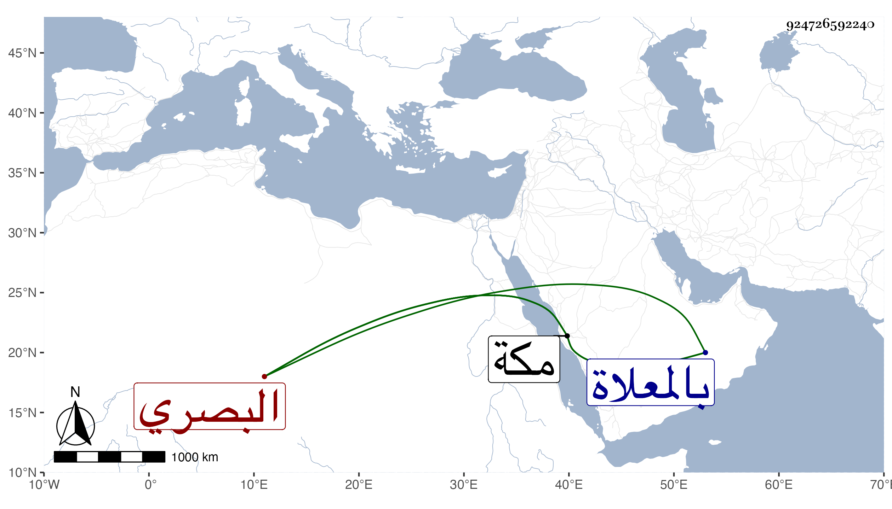

0902Sakhawi.DawLamic.ITO20230111-ara1.EIS1600.924726592240
Biography ID: 924726592240
إبراهيم بن أبي بكر بن يوسف كمال الدين أو برهان الدين بن الجمال البصري نزيل مكة . ولد في سنة أربع وثمانمائة وتعاطى التجارة ولقيته بمكة في الحجة الأولى فأنشدني لنفسه :
| ألا ليت شعري هل أتيتن ليلة | بروضة خير المرسلين محمد |
| نبي له الله اصطفى من عباده | وأرشدنا منه إلى كل مقصد |
مات في آخر يوم الاثنين ثامن ذي القعدة سنة تسع وخمسين بمكة وصلى عليه صبيحة الغد عند باب الكعبة ودفن بالمعلاة .
